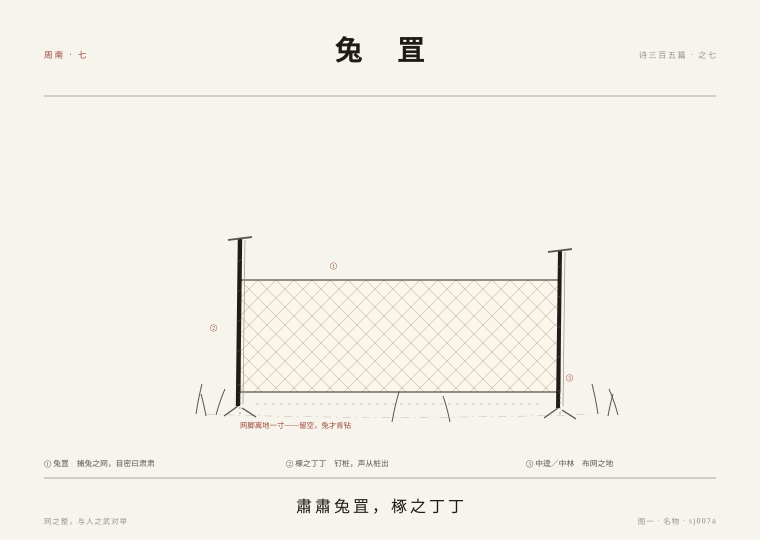
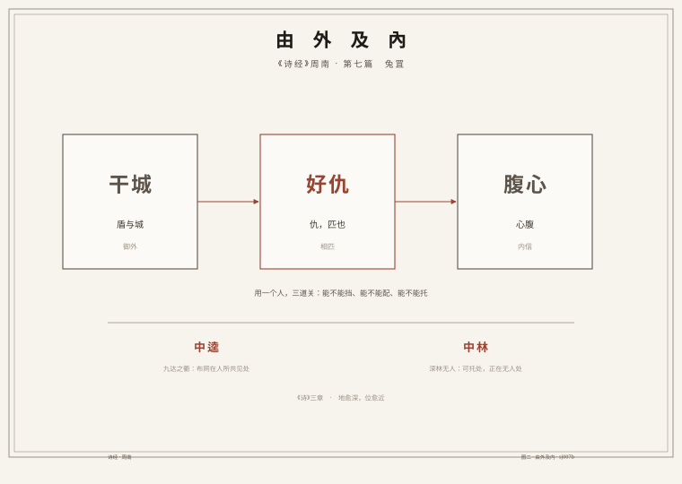

第七篇 兔罝
周南 · 之七 SJ007
一 解题
诗三判：
- 谁在说：一位看见猎户布网、因而想到人才的人。三章都是「先见网，后见人」——网在此，武夫在彼，诗把两件事并排放下，不说破。
- 说什么事：一张捕兔的网，钉得整整齐齐；一群赳赳武夫，可当公侯的干城、好仇、腹心。诗说的是：草野之中，有可用之人。
- 为何编在此：前六篇从婚说到嗣说到族。此篇一转，从「家」跳到「国」——人才从哪来？从草野来。周南的次序至此完成一次转身：由内而外。
《毛序》：「《兔罝》，后妃之化也。《关雎》之化行，则莫不好德，贤人众多也。」——把一首写猎户的诗，读成「教化所至，贤人众多」。
朱子《诗集传》：「兴也。肃肃，整饬貌。」——以网之整饬，兴人之武勇。
本库的看法：此篇的骨不在「贤人众多」，在「由外及内」三个字。
干城、好仇、腹心，是三种位置：卫于外、匹于中、信于内。一首四句的小诗，把「用人之道」写完了——先看他能不能挡，再看他能不能配，最后看他能不能托付。这个次序，今日读来仍然锋利。
二 经文
第一章
肅肅兔罝，椓之丁丁。赳赳武夫，公侯干城。
第二章
肅肅兔罝，施于中逵。赳赳武夫，公侯好仇。
第三章
肅肅兔罝，施于中林。赳赳武夫，公侯腹心。
分章：毛传、朱子皆三章，章四句。三章换两处：布网之地（不言／中逵／中林），所用之位（干城／好仇／腹心）。地越布越深，位越用越近。
三 韵读
| 一 |
丁、城 |
耕部 |
| 二 |
逵、仇 |
幽部 |
| 三 |
林、心 |
侵部 |
耕部清亮，幽部沉，侵部闭口收。三章三韵，一章比一章收：首章「丁丁」是敲击声，清而远；次章「逵、仇」沉下来；末章「林、心」一闭口，话就说到心腹里去了。韵在这里不是配乐，是把「由外及内」走了一遍。
四 字义名物
- 肅肅——整饬貌。朱子「整饬貌」；毛传「敬也」。本库取「网目整密」之貌——是网的整，不是人的敬。
- 兔罝（jū）——捕兔之网。罝，网也。
- 椓（zhuó）——击、钉。钉网桩。
- 丁丁（zhēng）——击木之声。
- 中逵（kuí）——九达之道，即通衢。《毛传》「逵，九达之道」。
- 中林——林中。
- 赳赳（jiū）——武貌。《毛传》「赳赳，武貌」。
- 干城——干，盾；城，城墙。二者皆捍卫之具，合为「捍卫者」。
- 好仇（qiú）——好匹、好搭档。《毛传》「仇，匹也」。
- 腹心——心腹，可托以机密者。
五 今译
第一章
网目整密，钉桩丁丁地响。这赳赳的武夫，是公侯的盾与城。
第二章
网目整密，布在九达的通衢。这赳赳的武夫，是公侯的好匹。
第三章
网目整密，布在深林之中。这赳赳的武夫，是公侯的心腹。
译注：「好仇」不译「好仇人」，仇在此训匹。一字之差，意思全反——这是本篇最易出错的地方。
六 章旨
一章：御外。网布在开阔处，人所共见；武夫立于外，挡得住。干城是「界」，是把危险拦在外面。
二章：相匹。网布在通衢，四方交汇；武夫可与之并立、共事。好仇是「侣」，不是下属，是能并肩的人。
三章：内信。网布在深林，人迹罕至；武夫可入内室、可托机密。腹心是「里」，是把背后交给他。
三章之序，是「用一个人」的三道关：能不能挡（干城）、能不能配（好仇）、能不能托（腹心）。多数的用人，止于第一道；诗把三道写全了。
七 诗教
- 兴：以网之整饬起兴。网是「取物之器」，其用在「得」；诗用它起头，暗含「取才」之意——兴象与题旨暗合，不是随手抓来的。
- 观：可观古人的「识才」之法：不看出身，看位置。同一个人，可当城，可当匹，可当心腹——诗把三种用法摆出来，让读者自己判。
- 群：此篇最宜用于「团队」之教。干城、好仇、腹心，三词至今活在汉语里，说的仍是同一件事。
- 怨：此篇无怨，但有隐忧——「野有遗贤」四个字不在诗里，在诗的旁边。诗越是说「草野有可用之人」，越说明平日里这些人不被看见。
八 分寸与边界
- 不可把「好仇」读成「仇人」。仇在此训「匹」，是「好搭档」。《毛传》「仇，匹也」明文；读成仇怨，全章意思反转。
- 不可把「干城」只解作「盾与城」两件器物。它已是合成词，指「捍卫者」；若只作器物解，武夫就成了工具，不是人。
- 不可把三章读成同义反复。干城（外）、好仇（中）、腹心（内），是三道人尽其用的关，不是三次重复的赞美。
- 不可把此篇读成「歌颂狩猎」。猎事只是兴象，诗的重心在「人可用」，不在「兔可捕」。
- 不可把「赳赳武夫」读成「莽夫」。赳赳是武貌，是「有力量而整」，与「粗野」相反——首句「肃肃」已经把「整」字先立住了。
九 存疑
- 「肃肃」之训：毛传「敬也」，朱子「整饬貌」，一说「网目密而不疏」。三义可通，本库取「整密」。
- 「兔罝」之实：一说是捕兔之网，一说即「虎落」（捕虎之围），一说泛指田猎之网。本库从「捕兔之网」，图取其形。
- 「逵」之训：毛传「九达之道」。一说「水中之道」，一说「道旁」。本库从毛。
- 「好仇」之训：毛传「仇，匹也」。郑笺「怨耦曰仇」，此处取「匹」不取「怨」。两训并存，本库明取「匹」。
- 是否后妃之化：毛序以为教化所及；今人多以为美武夫、叹遗贤。诗无证，本库不指实，只认它写「草野有人」。
十 跨典
- 《左传·僖公二十七年》：「《诗》云：『赳赳武夫，公侯干城』，取其武也。」——此诗最早的用典，出自晋文公论将。一句诗，当场成了用人标准。
- 《大雅·文王》：「予曰有疏附，予曰有先后，予曰有奔奏，予曰有御侮。」——「御侮」即干城，「疏附」近腹心。文王四友，正是此篇三位的放大版。
- 《周南·关雎》：「君子好逑。」——逑、仇皆训「匹」。同卷之内，「好逑」与「好仇」是一对：一为配偶，一为僚友。
- 《周易·师·彖》：「师，众也；贞，正也。能以众正，可以王矣。」——武夫是「众」，能不能用，全看「正」不「正」。此篇所祝的三位，就是「以众正」的三道关。
- 《小雅·祈父》：「祈父，予王之爪牙。」——同是「武夫为国用」的主题，彼为怨（王之爪牙而不得其所），此为颂。一怨一颂，同题两面。
十一 双卡与图
双卡五对：
| 肃肃（网之整） |
赳赳（人之武） |
| 中逵（通衢） |
中林（深林） |
| 干城（御外） |
好仇（相匹） |
| 好仇（相匹） |
腹心（内信） |
| 布网之地 |
用人之位 |

图一 · 兔罝与木桩 名物图

图二 · 由外及内 义理图
读图三处：
- 网目之密：肃肃二字，落在网目上。目疏则兔过，目密则兔不得出——「整」是这个字的实处，不是形容人的恭敬。
- 两根木桩：一高一低，钉在土里。椓之丁丁，声从桩来；网无桩则张不开，人无位则用不上。
- 桩下留空：网脚离地一寸，是猎人的规矩——留空，兔才肯钻。图中那一道空隙，是全图唯一「故意不严」的地方，也是「肃肃」之所以为「肃肃」的分寸。